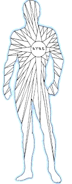

In this first sequential examination of the sephiroth, we will begin at Malkuth and will then circle around to Kether to proceed again towards Malkuth. This approach is not so disorderly as it might seem; a treatment of its basis in the traditions of kabbalah is given in the Malkuth text on the messages to the Churches of Asia. The purpose is to discover what the spheres have to add to our appreciation of Y'shúa's Sermon on the Mount, as recounted in Sephir MattíthYahu, the Book of Matthew. The little they might add to an understanding of these scriptures must not be gainsaid; for revelation is given by the littles. What follows is a a cursory examination of these words: this interpretation is presented simply as an example of kabbalistic exegesis. To those who will think we make too much, in these pages, of numbers, whether stated or implied by quoted scriptures, I offer the reminder that even the hairs of our heads are numbered: it is not presumptuous, in consequence, to assume that the operation of numbers in scripture has special, intended significance. Overlooking this literal enforcement of the plausibility of this approach, let's begin. The beatitudes of Saint Matthew are nine in number. As the sephiroth are ten, their relevance to the Sermon on the Mount is not immediately apparent. However, a tenth beatitude is hidden in the precepts beginning with Matthew 5:13 and continuing, minimally, through the end of Matthew 7, in the teaching of the wise man who both hears and performs the sayings of Y'shúa: as it is written in Revelation 22, "blessed is he that keepeth the sayings of this book." Kingdoms are ordered by the operation of law; and Malkuth, the manifestation of the Kingdom of Elohim, is ordered by the spiritual precepts of El, as they apply within the context of grace, which is the real-time mercy of HaShem. Expressed otherwise, Y'shúa might have taught, "Blessed are they who shall hear the words of life and do them: for they shall dwell securely." It is rather wonderful, however, that he chose to hold a hidden blessing in reserve: some shall imagine themselves worthy of the nine, but shall be confounded by the tenth; so, also, shall some see themselves as unworthy in the nine, but shall, by the tenth blessing, be confirmed in all to all, as it is written, ". . . and the last, first." I find yet another reason for no written, tenth beatitude in the Sermon on the Mount. Y'shúa teaches that the Kingdom-- Malkuth-- is like leaven hidden in measures of meal. Without digressing into interpretation of what these measures of meal might signify, we note that the blessing of the Kingdom is promised twice in the beatitudes. And why not three times: once for each measure of meal? Well, because the Kingdom is yet hidden until the full manifestation of the Sons of God; so, also, is the fullness of the Kingdom's blessings. The tenth blessing will be received with joy as the criteria for all blessings are confirmed within those who appear within the maturation of Malkuth: as it is written, "And in their mouth was found no guile: for they are without fault before the throne of El." The precepts of the Sermon on the Mount are the distilled essence of Y'shúa's doctrinal gifts to the Kingdom-- they are the very fabric of the righteous mammon with which the Father has clothed him. To hold them in one's heart while reading all other scripture is to stand before an open door through which shines every nuance of sound interpretation. Although they are of surpassing wisdom in every phrase, one nevertheless tends to receive them-- not without good reason-- into the contexts of personal states of being, remaining largely ignorant of those qualities of Light beyond the visible spectrum, as determined by an individual's capacity to receive. Because the beatitudes address themselves majestically to every spiritual state, one shouldn't construe their force at any reading to signal the limits of their application. |
|||||
 Kether:
Crown, Intelligence Kether:
Crown, Intelligence
Blessed are the poor in spirit:
for theirs is the kingdom of heaven. As perceived in human terms, Kether is the sphere of Intelligence: it is the crown given to man as signet of his dominion over all things of Earth, from the beginning. Not only is intelligence the tool by which man has subjugated the elements and lesser creatures to his own will, often to his harm and shame, but it is also the faculty by which man measures the movements of spirit within his own being: both "the spirit of man that goeth upward, and the spirit of the beast that goeth downward to the earth." From both the Greek and Hebrew scriptures, the words meaning "spirit" can be translated as "breath," or as "breeze." The two movements of spirit in the remarkable King James version of the Ecclesiastes parable, which are likened, as though in inversion, unto the exhale and the inhale of breath, are the contrary winds that drive the whirlwind of which Paul speaks in Romans 7. With an intelligence focused upon the power of the Breath of HWHY, which dwells within the tabernacle of the mortal body in the position of the Son, man is able to quieten the contrary gusts of his spirit's lesser winds: he is able to impoverish them, denying their power over his mind and robbing them of their velocity. As one recognizes through meditation and chooses the still, small, ever-present voice of God's guiding Spirit within himself (those who seek shall find), he enters into rest-- into shabbat. Able to hear all things, now, in the peace that passes understanding, the Tabernacle Man can formulate thought and words that reach congruence with the powerful and productive inner calm of Matthew, Chapter 8. Meditation, which Paul calls "prayer without ceasing," reveals the interface between God's own, soundless voice as it resonates within the soul. The Presence of this interface is Messiah: once it is seen within, both Father and Son are perceived within, and the supplicant can no longer easily ask amiss, because he has opened unto the reality of the Kingdom of Elohim within his own soul. This inward focus on the expressions of HWHY is the mind found in Messiah Y'shúa. Allegiance to the operations of this mind in the Tabernacle Man puts to death the thieving carnal mind of the natural man through processes of transformation; and it opens the spiritual path to the full resurrection of Yahushúa within, as the outward paths of daily life unfold in the glorious freedom of the Sons of Elohim. |
|||||
| |
|||||
for they shall be comforted. It is often taught, in
ignorance of the subtleties
of archaic usage, that, "The fear of the Lord
HWHY is the beginning of
wisdom"-- of Chokmah. The word, "fear," in this verse, would be more
truly translated as "reverence." Nevertheless (He who is in us is
greater than the mysteries of translation), the
What cause is there either to mourn or to be afraid, unless one has yet to learn sufficiently of the righteousness of El? As the El of wisdom and love teaches us His ways, our joy shall become full; for the ways of Yah satisfy every noble desire of the human heart. His ways also cleanse all ignoble desires, preparing the way for even their proper fulfillment: as it is written, "For the Son of Elohim was not yea and nay, but in Him was yea." The world writhes always in quiet agony to the keen perceptions of a spiritual man. Periodically, its travail increases that any merely sentient man might see its pains. The karmic wheel of history notwithstanding, however, HWHY has declared His creation to be "good" and "very good" from the beginning: knowing all things that should come to pass and winking at these, our times of ignorance. It is from His higher knowledge He speaks when HaShem promises to wipe away the tears from every eye. Though we cannot fully see that end, we continually invoke the Elohim of sight to envision it, that our hearts and minds might come to comfort in Wisdom: not worldly wisdom, which is born of reason, but the Spirit of Wisdom that proceeds from HWHY , the author and finisher of our faith. |
|||||
| |
|||||
for they shall inherit the earth.
Such as understand do not exalt themselves by continually striving to save their own souls: they are willing to lose them, were it possible, to lift a fallen brother from the ditch or to boost a rising brother over the wall of the enemy. To such as remain meekly open-- without any premeditation-- to the will of the unsearchable Spirit of Wisdom as it moves in the lives of men, shall be given Earth, the Kingdom, and all things: even as Yahushúa is given of the Father; for these shall appear at the great wedding feast clothed in garments of white: in the good deeds of their sacrificial service in meekness. |
|||||
for they shall be filled. "Learn
what that meaneth, I will have mercy, and not sacrifice" Even when we
shall have fully come to know the spiritual interpretations of the laws
pertaining to sacrifice as they speak concerning the use of the light
energies that reside within the soul of the Tabernacle Man, the parable
will still apply. To
Righteousness is imputed to us only as we continue to hunger for its Source in faith. As we fill with the righteousness of Elohim as it manifests itself through us, however, we will find ourselves walking in the good deeds He has prepared for us from the beginning. As we are faithful to glorify Him in our walks, He is also faithful to fill the cups of our bodily members with the light of His righteousness, to their overflowing-- of which abundant radiance shall our crowns of righteousness be formed. Certain in the knowledge that the righteousness attending us belongs to Elohim, we can be filled to walk faithfully in mercy as stewards of righteousness: the seeds of the hierophant-- that stern, religious disciplinarian-- will not flourish in the fertile soil of our soul fields. While we walk in Messiah-- in the Spirit of the Anointing as it fills the tabernacle after alighting upon the mercy seat of the heart-- we come to understand that mercy is acceptable sacrifice: for if we do not forgive freely from our hearts, neither can we be freely forgiven; and neither will the Spirit of Truth be content to dwell with us. Forgiveness, acceptance, and knowledge of the ways of Yah are the aim of sacrifice-- of the dedicated use of our faculties and energies in the service of the Kingdom of Elohim. If we would receive the blessing of mercy for ourselves, we must graciously and actively sow seeds of mercy into the hearts of others. Mercy is the child of love-- of Chesed; and only the merciful can hunger and thirst after true righteousness, as they only are prepared both to receive of it freely from above and to give of it freely unto as many as are in need. Truly, they shall be filled! Our righteous Father is rich in mercy-- is able to overwhelm the creation with its outpouring in righteousness. Let us fast for the gift of mercy in our lives by ceasing from our own works; for to focus hungrily upon a desire to establish one's own righteousness is to invite thirst for revenge, retribution, and recompense, should we be threatened with its loss. Let us, rather, hunger and thirst after the unfailing righteousness of Elohim, that, as we are filled beyond capacity, the whole Earth may come to be filled in the overflow, with knowledge of Him, in justice and in truth. |
|||||
for they shall obtain mercy.
The binary
principle displayed in the sephiroth of the right- and left-hand pillars
of Adam Kadmon will be presented more fully in the section of text
dealing with the spheres as they
Judgment and mercy are inseparable in the righteousness of HaShem: The Name HWHY is a statement of their perfect agreement; Yah gives Y Light H in justice and Yah balances W the resulting illumination H in mercy. We need not fear judgment without mercy; nor may we expect mercy without judgment. In our past, our agreement with the covenant of The Name was broken by sin; but HaShem is faithful beyond our violations, as the promises to Yisrael verify. HWHY renews His covenant for life by writing it upon the tablets of our hearts and minds in the restoration that comes in Messiah. Putting on the garments of Mashiyach annuls the covenant with death. A loving spirit tends to mercy, opening the soul to be filled by the righteousness of Elohim, but that mercy must be given expression in action in order to bear fruit in the earth: as it is written, "unless a seed falleth to the ground, it abideth alone." In Chesed, mercy is conceived and developed; in Din, it is born. The natural birth process is a parable that teaches us, among many other things, that love must labor to bring forth her child. Mercy, the quality, is conceived by receiving of the righteousness of Elohim. Mercy is given form as that righteousness from above is nurtured unto exterior manifestation upon its release into the realm of action, which is represented by Sephirah Din. By our actions confirming the presence of God's righteousness in us, mercy is truly born in power: able to transform both the lives of those who give and those who receive; for as we do unto others, so shall it be done unto us-- both in this world, and in the age coming in the full stature of the manifestation of the Sons of El. |
|||||
for they shall see God. The word that is translated,
here, as "pure" comes from a Greek root associated with cleanliness-- with the purity
that comes by washing. Another Greek word signifies a purity of nature. The
stony heart of natural man in his fallen state is desperately wicked and must be
broken, that its hold upon reason might be weakened. As man awakens to his inner
impoverishment, he is prepared to comprehend the
We speak from the heart. In Messiah, the heart of man becomes clean because the Word of HaShem takes residence therein: our hearts are circumcised by the added presence of the sacred heart of HWHY in Yahushúa as it tabernacles with the sons of man. As the Word/Son that is in the bosom of the Father is shed abroad into our hearts, we are cleansed by the flow of His lifeblood within. The pure and sacred heart of Mashiyach is the essence of beauty-- of Tipareth. We are made clean by receiving of the Father's words in understanding; and we actively partake of His purity of heart through contemplation of the Word-- of the composite projections of Principle that comprise the Son-- while engaged in our daily affairs, through unceasing prayer: not because of our works of contemplation, lest any man should boast; but as the free gift of Elohim to those who search out His will in all things, according as it is given unto them. To the purely cleansed all things are clean, and the clarity of their vision prepares them to look even beyond the mercy seat hidden in the Yahrushaliem above, as the veils are opened. There are veils above, and there are veils below. The heart of the natural man is thick darkness; he sees nothing at all. The heart of the spiritual pilgrim is leavened; he sees through a glass darkly, and he darkly retains his visions. The open, all-seeing heart of Mashiyach Yahushúa in us reveals unto us all that Elohim deems as expedient for us, and shall reveal all in the day He has designated for the enlargement of our hearts. |
|||||
for they shall be called the children of God.
Poor in spirit;
mournful, meek; desiring the righteousness of Elohénu; merciful; pure in
heart: these blessings prepare the children of HaShem to participate
with Messiah as true brothers in
We are called to follow peace with all men in the footsteps of haMashiyach, the Prince of Peace. True peace is neither won nor maintained by weaponry; rather, it is the weapon that wins. Messiah's sword is the word of peace, urging us, "Suffer ye thus far," and instructing us to heal even those who come against our lives. The word of peace cuts twice in the breasts of violent men: it disables their understanding of us as enemies; and it wounds the underlying sense of self righteousness by which the violence is fueled, giving truth a chance to assert itself. Thus, it is written, "A soft answer turneth away wrath: but grievous words stir up anger." How beautiful, the feet of those who publish peace upon Tsion! |
|||||
for theirs is the kingdom of heaven. There are those who publish mere pacifism, and
not peace. Pacifism seeks compromise as expedience might require. Peace
compromises not at all. Pacifists invoke peace with evil
The majestic among Netsach are those who also proclaim unto Zion-- by Hod, with conscious intent-- "Thy God liveth!" They publish the gospel of peace: the exceedingly good news of the Kingdom that is coming in the full power of the righteousness of HaShem. Those who follow peace only for safety can be subjected, through adversity, only to injury; such know nothing of persecution. There can be no peace-- no rest, shabbat-- for these, as other possible injury might always be forthcoming. Those who call for peace when there is no peace are mere guardians of the status quo. As such, they will find no comfort at the hands of Father and Son. Only those who are willing to lose their lives in the service of proclaiming the presence of the Kingdom of Elohim are able to suffer persecution; for when injury comes upon them, they suffer both in the flesh and also spiritually-mourning unto God not for themselves, but for the possible loss of a brother ignorant of the meaning of his actions. The Kingdom of Heaven is-- literally, from the Hebrew-- "the Kingdom of Names." The number of Names enthroned within us and gathered into haMashiyach from among us must by no means be diminished. May our righteous Elohim avenge the blameless ones of the Kingdom of El by granting their prayers for mercy! |
|||||
and shall say all manner of evil against you falsely, for my sake. for so persecuted they the prophets which were before you.
The Kingdom of
Heaven is founded on Torah and the prophets, Yahushúa being their chief
cornerstone-- their foundation. The writings of both testaments measure
the Son while giving
To abide in the projection of the Light of the Father is to have fellowship with all who are of the Light. Light is not comprehended by darkness, which flees before its approach; but it is not until light is reflected from within thick darkness, the matter comprising the tabernacle of flesh, that it becomes visible. Thus, Y'shúa teaches his disciples: "He that receives you receives me; and he that receives me receives Him who sent me." In a sense, the cross is the physical body; in another sense it is the spokes of the wheel of life and death. As we take up the cross of Yahushúa, putting our shoulders also to the wheel, our resolve to endure must be firm. Messiah Y'shúa demonstrated the cost by the parable of His life and death on Earth. Let every man be certain, therefore, that he has been given the wherewithal to pay: that he walks clothed in the wealth of the Shekinah, the Angel of the Lord's presence. If our resolve to follow in the footsteps of Rav Y'shúa is founded in faith that Mashiyach Yahushúa will loyally supply our every need as we walk in Him, we have reason to rejoice: not because of personal reward, but in faith that the enemies of the cross of Mashiyach will be confounded by the reason of our hope, and that they will also come, therefore, to repentance. All men are pressing into the Kingdom by any means. It remains for us to show them the Door. As Messiah faithfully takes our burdens and infirmities upon Himself, therefore, let all who follow in His steps be faithful, also, to touch the burdens, infirmities, pains, and agonies of fallen brethren, drawing these things into themselves to be healed and resolved by the power of Messiah dwelling within, that the whole Body may be presented unto Elohim in garments of white, without spot, wrinkle, or any such thing. Baruch HaShem! |
|
|